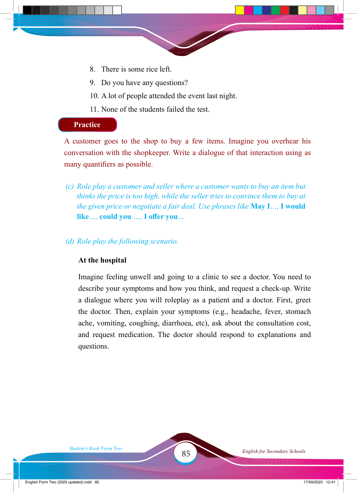

85
Student’s Book Form Two
English for Secondary Schools
8. There is some rice left.
9. Do you have any questions?
10. A lot of people attended the event last night.
11. None of the students failed the test.
Practice
A customer goes to the shop to buy a few items. Imagine you overhear his conversation with the shopkeeper. Write a dialogue of that interaction using as many quantifi ers as possible.
(c) Role play a customer and seller where a customer wants to buy an item but thinks the price is too high, while the seller tries to convince them to buy at the given price or negotiate a fair deal. Use phrases like May I…, I would like…, could you …, I off er you…
(d) Role play the following scenario.
At the hospital
Imagine feeling unwell and going to a clinic to see a doctor. You need to describe your symptoms and how you think, and request a check-up. Write a dialogue where you will roleplay as a patient and a doctor. First, greet the doctor. Then, explain your symptoms (e.g., headache, fever, stomach ache, vomiting, coughing, diarrhoea, etc), ask about the consultation cost, and request medication. The doctor should respond to explanations and questions.
17/09/2025 12:41